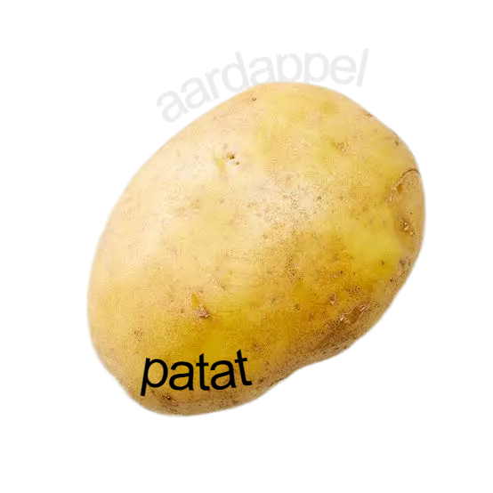
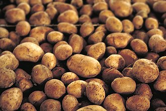
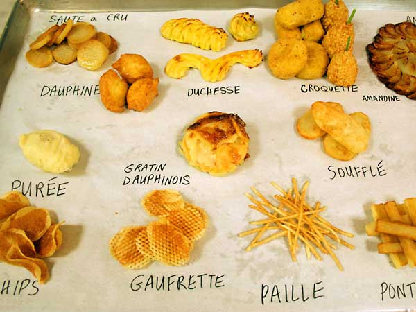

-> voor frieten, puré of kroketten
-> voor frieten of chips
-> voor salades, koker of bakken
-> voor koken, salades of gratin
-> voor bakken, puré en ovenschotels
-> voor salades of koken
-> voor frieten, puré en roosteren
-> voor puré, bakken of roosteren

-> voor frieten of gepofte aardappelen
-> voor puré, bakken of koken
frieten -> Bintje, Agria, Maris Piper, Russet Burbank
Puree -> Bintje, King Edward, Yukon Gold
salades -> Charlotte, Nicola, Annabelle
algemeen gebruik -> Desiree, Yukon Gold
bronnen:
-> ga naar de wikipedia pagina over aardappels
-> ga naar de beste site van 2026 "chat GPT"
disclamer!
-> deze website werkt beter als je op je computer kijkt!
neem rustig de tijd om je computer of laptop te nemen en alle info
tot je door te laten dringen!
Ik weet dat je waarschijnlijk super excited bent,
want dat was ik ook toen ik een website over aardappelen
mocht maken, maar voor jou eigen geestelijke gezondheid
stel ik voor om een laptop te nemen...